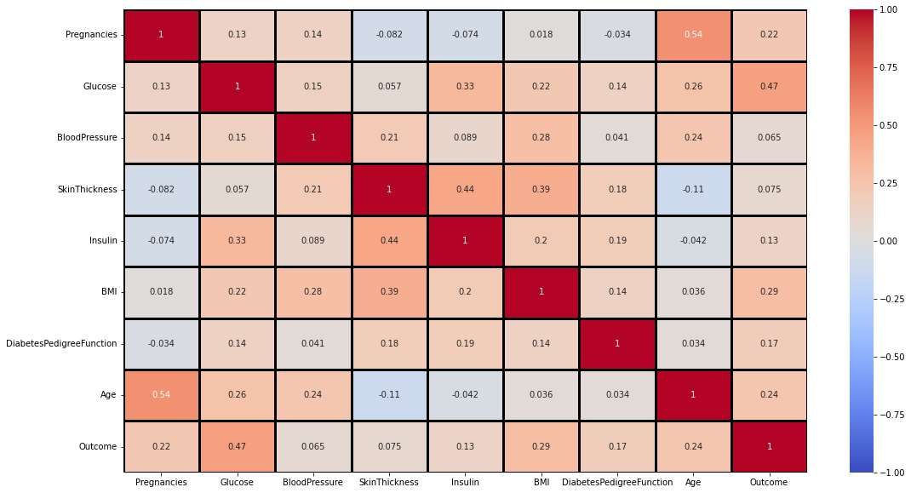
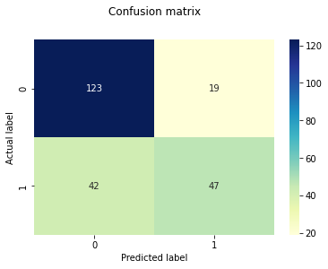

Introduction
- The logistic regression model, despite its name, is actually a linear model for classification.
Logistic regression has the same main idea as linear regression. The difference is that this technique is used when the output or dependent variable is binary meaning the outcome can have only two possible values
Types of Logistic Regression:
Binary Logistic Regression: The target variable has only two possible outcomes such as Spam or Not Spam, Cancer or No Cancer.
Multinomial Logistic Regression: The target variable has three or more nominal categories such as predicting the type of Wine.
Ordinal Logistic Regression: the target variable has three or more ordinal categories such as restaurant or product rating from 1 to 5.
Diabetes Logistic Regression Prediction
DataSet Details
Pregnancies decribes the number of times the person has been pregnant.
Glucose describes the blood glucose level on testing.
Blood pressure describes the diastolic blood pressure.
Skin Thickenss describes the skin fold thickness of the triceps.
Insulin describes the amount of insulin in a 2hour serum test.
BMI describes he body mass index.
DiabetesPedigreeFunction describes the family history of the person.
Age describes the age of the person.
Outcome describes if the person is predicted to have diabetes or not.
Import Libraries
import pandas as pd
import matplotlib.pyplot as plt
import seaborn as sns
import warnings
warnings.filterwarnings("ignore", category=DeprecationWarning)
Loading the dataset
df=pd.read_csv('diabetes.csv')
df.head(5)
| Pregnancies | Glucose | BloodPressure | SkinThickness | Insulin | BMI | DiabetesPedigreeFunction | Age | Outcome | |
|---|---|---|---|---|---|---|---|---|---|
| 0 | 6 | 148 | 72 | 35 | 0 | 33.6 | 0.627 | 50 | 1 |
| 1 | 1 | 85 | 66 | 29 | 0 | 26.6 | 0.351 | 31 | 0 |
| 2 | 8 | 183 | 64 | 0 | 0 | 23.3 | 0.672 | 32 | 1 |
| 3 | 1 | 89 | 66 | 23 | 94 | 28.1 | 0.167 | 21 | 0 |
| 4 | 0 | 137 | 40 | 35 | 168 | 43.1 | 2.288 | 33 | 1 |
Data Exploration
## check rows and columns
df.shape
(768, 9)
df.dtypes
Pregnancies int64
Glucose int64
BloodPressure int64
SkinThickness int64
Insulin int64
BMI float64
DiabetesPedigreeFunction float64
Age int64
Outcome int64
dtype: object
# Check if there are any missing values
df.isnull().sum()
Pregnancies 0
Glucose 0
BloodPressure 0
SkinThickness 0
Insulin 0
BMI 0
DiabetesPedigreeFunction 0
Age 0
Outcome 0
dtype: int64
df.columns
Index(['Pregnancies', 'Glucose', 'BloodPressure', 'SkinThickness', 'Insulin',
'BMI', 'DiabetesPedigreeFunction', 'Age', 'Outcome'],
dtype='object')
HeatMap
fig, ax = plt.subplots(figsize = (18, 10))
#cbar_kws= {'orientation': 'horizontal'}
sns.heatmap(df.corr(),annot=True,vmin=-1, vmax=1, center= 0,cmap= 'coolwarm',linewidths=3, linecolor='black', )
<AxesSubplot:>

Machine Learning
## Import ML libraries
from sklearn.model_selection import train_test_split
from sklearn.linear_model import LogisticRegression
from sklearn.metrics import classification_report
from sklearn.preprocessing import StandardScaler
import pickle
X = df.drop(['Outcome'], axis=1)
y = df['Outcome']
from sklearn.model_selection import train_test_split
X_train,X_test,y_train,y_test = train_test_split(X,y,random_state=40,test_size = 0.3)
from sklearn.linear_model import LogisticRegression
lg = LogisticRegression()
lg.fit(X_train,y_train)
C:\Users\jnngugi\AppData\Roaming\Python\Python37\site-packages\sklearn\linear_model\_logistic.py:764: ConvergenceWarning: lbfgs failed to converge (status=1):
STOP: TOTAL NO. of ITERATIONS REACHED LIMIT.
Increase the number of iterations (max_iter) or scale the data as shown in:
https://scikit-learn.org/stable/modules/preprocessing.html
Please also refer to the documentation for alternative solver options:
https://scikit-learn.org/stable/modules/linear_model.html#logistic-regression
extra_warning_msg=_LOGISTIC_SOLVER_CONVERGENCE_MSG)
LogisticRegression()
y_pred = lg.predict(X_test)
y_pred
array([1, 0, 1, 0, 0, 0, 1, 1, 0, 0, 0, 1, 0, 0, 0, 1, 0, 0, 0, 0, 1, 0,
1, 1, 1, 0, 1, 0, 0, 1, 0, 0, 0, 0, 0, 0, 0, 0, 1, 1, 1, 1, 0, 0,
0, 1, 0, 0, 0, 0, 0, 0, 0, 1, 1, 0, 0, 1, 1, 0, 0, 0, 0, 0, 0, 0,
0, 0, 1, 0, 0, 0, 0, 0, 0, 1, 0, 0, 1, 1, 0, 1, 0, 0, 0, 0, 0, 0,
1, 0, 0, 1, 0, 0, 0, 1, 0, 0, 0, 0, 0, 0, 0, 0, 0, 0, 1, 0, 0, 0,
1, 0, 1, 0, 0, 0, 0, 0, 1, 0, 0, 0, 0, 0, 0, 0, 1, 1, 1, 0, 0, 0,
0, 0, 1, 0, 0, 0, 0, 1, 0, 0, 0, 1, 1, 1, 0, 1, 0, 0, 1, 0, 0, 0,
1, 0, 0, 0, 0, 0, 0, 0, 0, 1, 0, 0, 0, 0, 0, 1, 0, 0, 1, 0, 0, 0,
1, 1, 1, 1, 1, 0, 1, 0, 0, 0, 0, 0, 0, 0, 0, 0, 0, 0, 0, 0, 0, 1,
1, 1, 0, 0, 0, 1, 0, 1, 1, 1, 1, 1, 1, 0, 0, 0, 1, 0, 0, 0, 0, 0,
1, 0, 0, 0, 1, 0, 0, 0, 0, 0, 0], dtype=int64)
print(classification_report(y_test, y_pred))
precision recall f1-score support
0 0.75 0.87 0.80 142
1 0.71 0.53 0.61 89
accuracy 0.74 231
macro avg 0.73 0.70 0.70 231
weighted avg 0.73 0.74 0.73 231
# confusion matrix
from sklearn import metrics
cnf_matrix = metrics.confusion_matrix(y_test, y_pred)
p = sns.heatmap(pd.DataFrame(cnf_matrix), annot=True, cmap="YlGnBu" ,fmt='g')
plt.title('Confusion matrix', y=1.1)
plt.ylabel('Actual label')
plt.xlabel('Predicted label')
Text(0.5, 15.0, 'Predicted label')

print(lg.predict([[1,103,30,38,83,43.3,0.183,33]]))
[0]
https://www.youtube.com/watch?v=qWfzIYCvBqo